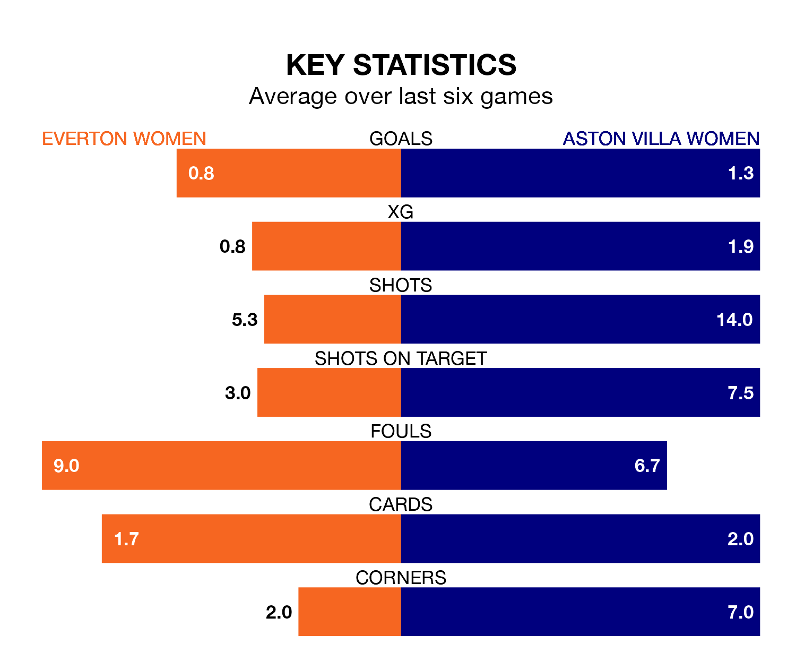

Everton Women are on a poor run ahead of hosting Aston Villa Women at Walton Hall Park on Saturday, with just three points collected from their last six games.
The Toffees have picked up just one win in their last six FA Women's Super League games, and face a Villa side whose last six games have brought three wins and one draw.
In the last 10 years, Everton and Aston Villa have played each other on 15 occasions. Everton won 10 of them, Aston Villa three, and they drew twice.
On average, the Toffees scored 1.8 goals and the Villa 0.7 in those matches.
Their last meeting was on January 13, when Everton won 3-0 away.
Everton are 10th in the table after 15 games, of which they have won four and drawn two, earning 14 points.
Aston Villa are two places ahead of the Toffees in eighth, with five wins and one draw putting them on 16 points.
In Courtney Brosnan, the home side can rely on one of the league's safest pair of hands. She has kept three clean sheets in her 13 appearances this season in the FA Women's Super League.
In the Villa's net, Daphne van Domselaar has two clean sheets in 14 games. She has conceded a goal every 45 minutes, 20% more often than the 53 minutes between goals for Brosnan.
With 13 goals in 15 games so far this season, Everton are the league's lowest scorers with 0.9 goals per game. And they are conceding more than average, letting in 27 goals at a rate of 1.8 per game.
The visitors are also below average scorers, with 1.3 goals per game, compared to a league average of 1.7. They have conceded 2.1 goals per game.
Everton's last match was on March 2, a 2-1 loss against Manchester City Women, with Hanna Bennison getting the goal for the Toffees.
Aston Villa lost 4-1 against Liverpool Women last time out, on March 3, with Sarah Emma Mayling on the scoresheet.
Updated: 15:10 (UTC), 15/03/24